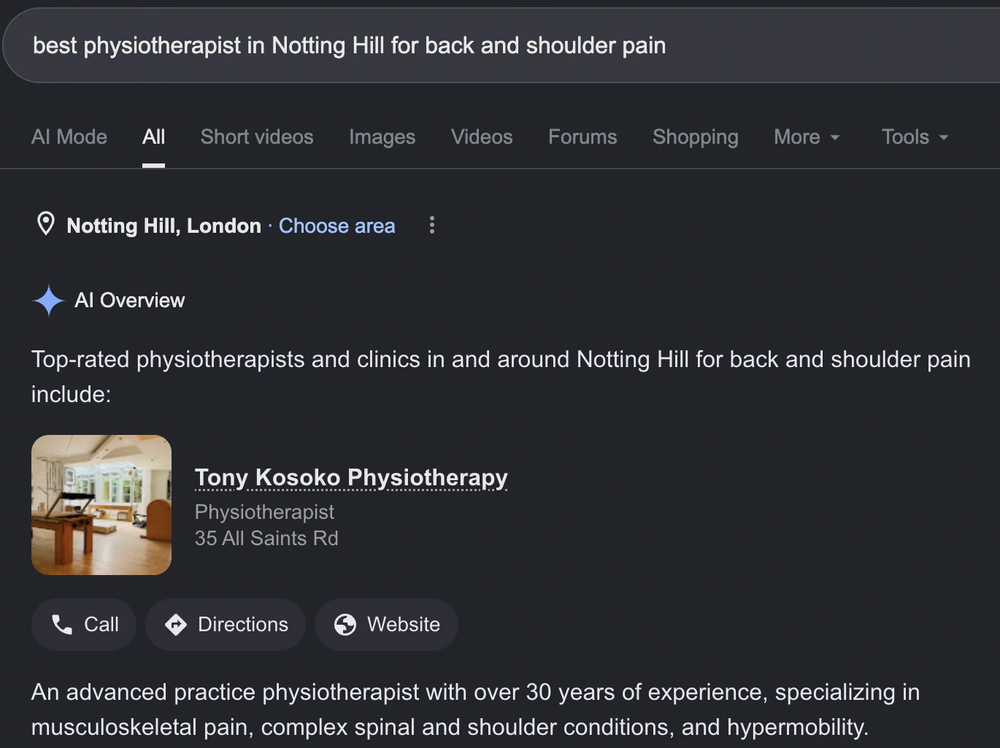

Saturn Results × Teya · Presence & Security Check
Twenty four checks, run by hand on 10 October 2026. Most of it is in good shape. One thing is costing you patients every week.
Ask Google "best physiotherapist in Notting Hill for back and shoulder pain" and it answers with you, first, above every clinic in this report.

Now look at the address. 35 All Saints Road is The Practice Centre. The clinic you founded in 2003 and left in May. Google has it listed as permanently closed.
That Directions button sends a patient to a shut door. The Call button rings the old landline. The photo is someone else's pilates studio.
You have already won the hard part. Google is telling people to come to you. It just cannot tell them where you are.
That is the free panel with your map pin, photos, hours and reviews. It is the record Google treats as the truth about a local business. We searched Maps twice for your exact name. Nothing.
Google still has to answer the question, so it builds something from whatever it can find. It found your old clinic.
We traced the wrong address back to its source. It is a listing you control.
Google trusts Bupa on healthcare, so it repeats what Bupa says. Doctify and LinkedIn also still place you at old practices.
Fifteen minutes in your Bupa account. Highest value quarter hour in this report.
You have no Google rating, and no way for anyone to leave one. Meanwhile The Practice Centre's page holds 29 reviews at 4.7, several about you by name.
Google will not move reviews between businesses. Those are gone. But the patients who wrote them are not, and they are the first people to ask once you have a profile of your own.
Both of these show up in the Google map for "physiotherapist notting hill". You do not appear there, or in the first thirty results below it.
| Pro Performance | Club Health | You | |
|---|---|---|---|
| Google reviews | 330 | 54 | 0 |
| Rating | 5.0 | 5.0 | none |
| Last review | 2 months ago | about a year ago | n/a |
| Replies to reviews | Every one | Every one | n/a |
| Photos on Google | 37 | 25 | 0 |
| Book online | Yes, instantly | Enquiry form | Enquiry form |
| In the map | Yes | Yes, top | No |
Club Health is the one to look at. Their newest review is about a year old and they still sit top of the map, above a rival with six times as many. They are not beating you on care or on budget. They are on the map and you are not.
Your Book page says it plainly: "There is no complicated booking system here. Just tell me a little about what is going on, and I will personally be in touch." Payment is taken at the end of the appointment.
Pro Performance take a booking instantly. StretchLAB advertise a free fifteen minute consultation, booked online. Someone in pain at ten at night fills in your form and waits.
Every page uses your business address, except one. The privacy policy points patients at a personal Gmail twice, including as the contact for data protection.
That is the page someone opens when they have a complaint about how you handled their health records. Five minute fix.
Two unfinished notes are live on the Locations page.
Tell us the Saturday hours and both disappear the same day.
We ran all twenty four. These are the ones that did not need a conversation.
Zero broken links across twelve pages and twenty six files, and your email authentication is set up better than most practices we check. Three of the four amber items fix themselves once the Google profile is live. The fourth is a cosmetic slip in the site header on phones narrower than 345 pixels, which we will tidy up.
Needs you, about an hour in total
Saturn Results
A person, not a score out of a hundred. We crawled all twelve pages and the twenty six files behind them, searched Google, Maps and Bing for your name and your trade, opened your two nearest rivals' profiles and counted, inspected your certificate, domain and email records, and traced the address in Google's AI answer back through Bupa to the clinic that closed.
Accurate as at 10 October 2026. Search positions move, and Google results vary slightly by location and device.